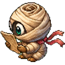

 GhostBug
GhostBugTap a stage to read its story.
Swaddle is a round bundle of dirty-white wrappings with two bright eyes peering out from the center and a red sash cinched around its middle like a tiny belt. Short leaf-like arms poke from the bandages, and it skitters on hidden legs through the Poison Marsh's reeds. It collects small marsh-bugs inside its wrappings for safekeeping - the bugs tickle, causing the random wriggling that makes it look possessed when it is merely delighted.
Field note: Each strip of bandage on Swaddle has a tiny word written on the inside - no one knows who wrote them or how they got there.
Poison Marsh. Swaddle and its family are found in the Poison Marsh. See everyone who lives there.
Share a Bond Food that matches its types to become friends. Swaddle loves:
A Bond Food is not a trick. It joins your spirit with the Kimuro's spirit, and only when it chooses you.
Print the Kimuro adventure packs: mazes, cards, a board game and Bond Mark medals.
See the printable packs